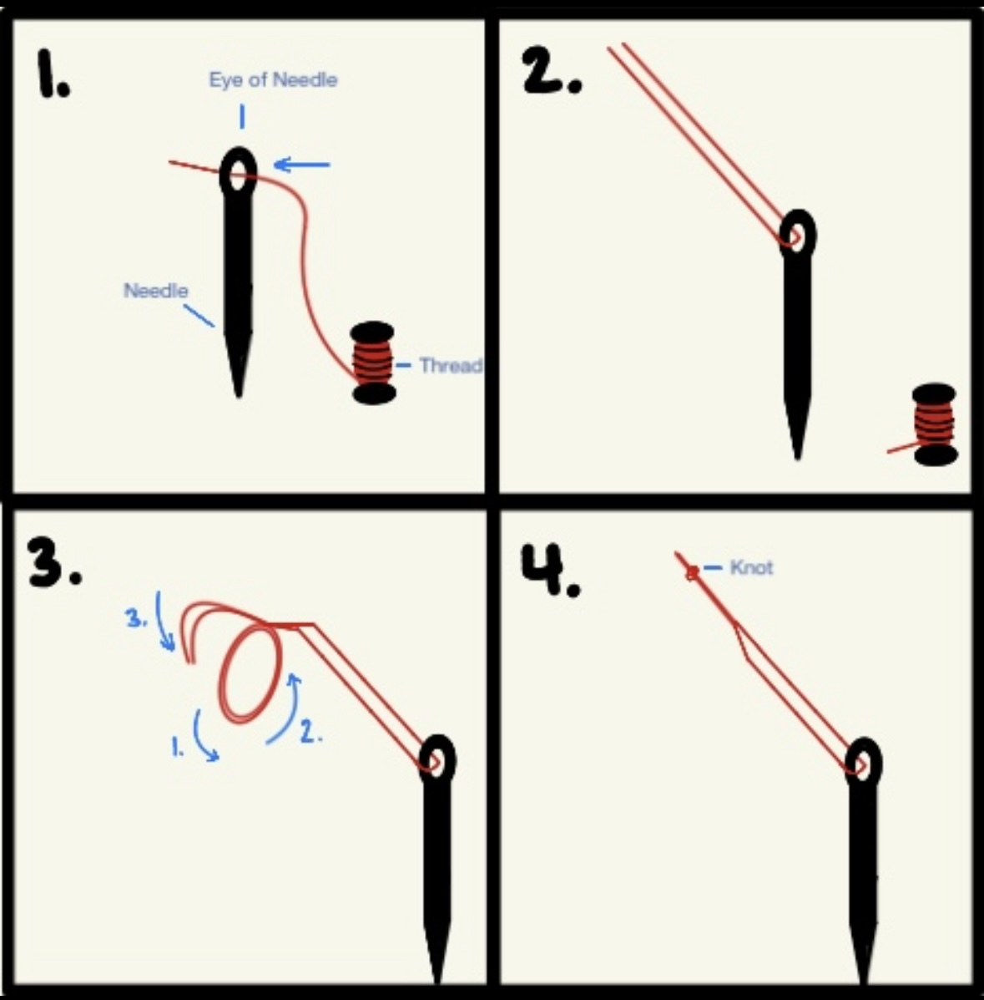

How to Prepare Needle and Thread
- Cut about 18 inches of thread.
- Insert the thread through the needle eye.
- Grab both ends of the thread so that it will side by side by side.
- Pull the thread until both ends are even and far away from the eye of the needle.
- Wrap the two ends of thread around your finger to make a small circle
- Insert the two ends inside the circle to make a knot. (This is considered a double knot)

class="- topic/image "/>The needle is threaded and ready for sewing.